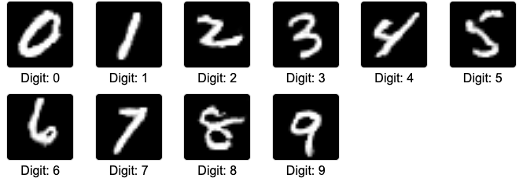
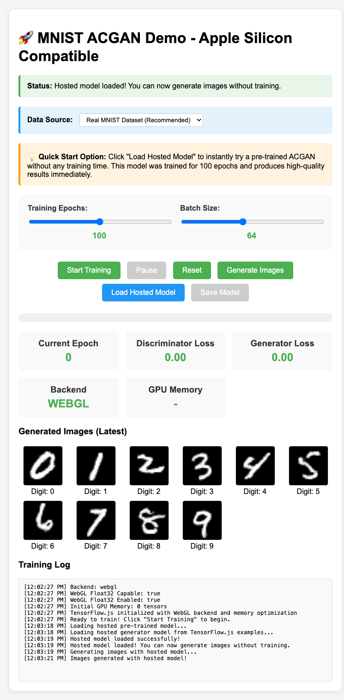

02 / Teaching / Completed class examples
Emerging technologies and applied AI.
A COMP308 example that makes generative AI tangible: run a model in the browser, inspect its output, and connect the result to the architecture.
- Context
- Centennial College · past classes
- Course
- COMP308 · Emerging Technologies
- Featured example
- ACGAN · TensorFlow.js · MNIST digits


Make a generative model something students can inspect.
In COMP308 Emerging Technologies, AI examples provide a way to connect a model’s architecture with its behavior. A generative model becomes easier to discuss when students can run it and examine the images it produces.
This browser-based example explores an Auxiliary Classifier Generative Adversarial Network, or ACGAN, using handwritten digits. It brings the model, generation controls, output samples, and training interface into a single demonstration.
Connect the architecture to the output.
Condition generation on a digit class.
The generator combines a noise vector with a class label. That makes the intended digit part of the input, giving students a concrete way to discuss conditional generation and variation between samples.
Give the discriminator two jobs.
The discriminator evaluates whether an image is real or generated and predicts its digit class. The auxiliary classification task is what distinguishes this example from a basic GAN.
Separate trying a model from training one.
The demonstration can load a hosted pretrained generator from the TensorFlow.js examples. Students can inspect generated output before exploring the separate training controls, including epochs and batch size.
Use the browser as the learning environment.
The example runs through TensorFlow.js and WebGL. Its browser-based format supports the Apple Silicon teaching context without requiring the Node GPU backend used by other implementations.
The actual classroom demonstration.
The samples above were generated during this portfolio review by loading the existing pretrained model through the demo’s own interface. The capture below shows the classroom application and its controls.

Use the generated samples to ask specific questions.
What information comes from the class label? What changes when the noise vector changes? Does a sample resemble the requested digit, and how would we evaluate that beyond looking at it?
The example also separates model use from model training. A successful inference run demonstrates that the loaded generator produces samples; it does not establish how well a newly trained model would perform or prove the quality of the training procedure.
A teaching example from a past class.
This is selected material from completed COMP308 teaching. The public repository remains the source for the demonstration and its implementation context. The portfolio includes no student submissions, grades, assessment solutions, or current COMP229 course material.
The captures use the demo’s hosted pretrained generator from the TensorFlow.js examples. No model was trained, no API key was required, and no student data was used for the capture.
Next project